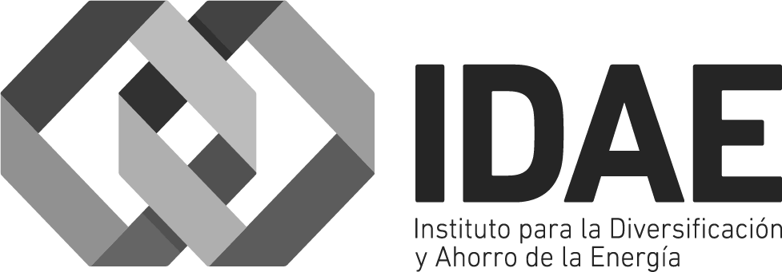
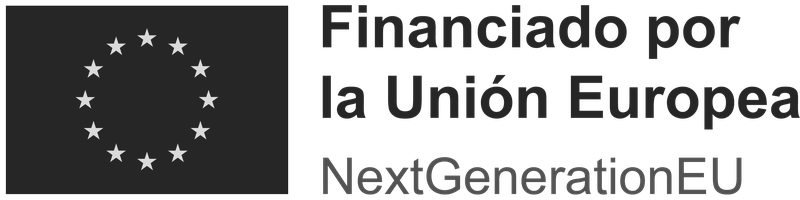

We merge agriculture and solar energy by scaling an innovative photovoltaic configuration, and we share our revenue with farmers.
We unlock thousands of acres of farmland for solar energy. Energy and agriculture co-exist, instead of compete.
Farmers keep their land, their crops and their EU CAP subsidies, and add a stable income from Eki.Labs: a «second CAP». Three income streams per hectare, less exposed to weather, yields and markets.
The land stays yours, and so does the harvest.
10–18 m between rows keeps machinery working; the morning and evening shade helps the soil keep its moisture.
More income per hectare plus lower production costs make a more efficient farm.
We generate more value, and we share it with rural communities.
We install Eki.Labs rows on farmland and connect them to the grid, or to self-consumption and community solar models, with recurring revenue.
Producing when energy is worth the most lets us offer cheaper clean electricity and share our revenue with farmers.
The model pays back the project loans, shares revenue with farmers and funds our growth: more profit than conventional solar.
One technology, three kinds of customer.
For farms with high energy needs, like milking or irrigation. Our production curve matches their mornings and evenings.
3 farmers already power their farms with our technology.
Affordable, local clean energy through shared infrastructure, for more resilient rural areas.
Already done with Cañizal, a village of 421 people.
Long-term power purchase agreements: stable revenue for us, clean and cheaper energy for corporate buyers.
The most scalable model, starting with our first 1 MW project.
We electrify and digitalise the farm with the energy it already produces: a partnership that lowers production costs and raises efficiency.
Solar-powered pumping replaces diesel generators.
Charging on site cuts volatile diesel costs.
One asset for precision agriculture and for inspecting the solar rows.
Keeping farming and rural areas alive, and attractive to the next generation.
Data centers need clean, reliable power and local support to build. Our plants add both, and share their value with the farms around them.
Better economics through closer hourly matching of supply and demand.
Less land-use conflict, plus local income and rural jobs.
Water shared with irrigation communities, farm residues turned into biogas, waste heat for greenhouses, drying and food processing.
Predictable revenue with less volatility: more bankable projects.
Reliable anchor customers, with room to grow.
Avoided grid charges, less curtailment and better use of batteries.
Farming soil and sun, together.

